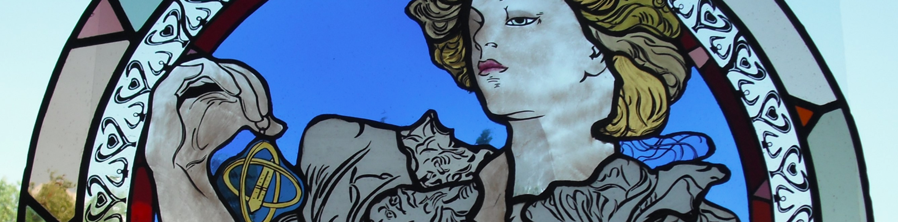

Savoir-faire
artisanal
Atelier vitrail en Isère
Un lieu où le temps prend forme, entre lumière, précision et patrimoine.
Un lieu où le temps prend forme, entre lumière, précision et patrimoine.
Bienvenue dans notre atelier vitrail en Isère, spécialisé dans la création et la restauration de vitraux d’art, ainsi que la réalisation de cadrans solaires sur mesure.
Chez Ombre Jaille, chaque projet est pensé comme une pièce unique : la lumière, les couleurs, les matières et l’implantation sont étudiées pour créer une œuvre durable, fidèle à l’esprit du lieu.
Didier Cottier est facteur de cadrans solaires et verrier d’art. Passionné par l’architecture du patrimoine bâti, il découvre avec émotion l’horlogerie astronomique et les vitraux : des objets d’art à la fois scientifiques et spirituels.
Formé par Christiane Guichard et Jean-François Dana à la Casamaures, puis auprès de Joël Mône à Lyon, il apprend la rigueur, la patience et la symbolique des formes et des couleurs.
Il obtient un brevet des métiers d’art et fonde l’Atelier Ombre-Jaille en Isère, pour transmettre et faire rayonner un savoir-faire où l'élégance, la géométrie et le mystère deviennent une vocation.

« En Dauphiné, Ombre-Jaille désigne la frontière entre ombre et lumière. »
En Anjou, c’est la lumière du sous-bois en automne, lorsque les feuilles se dorent. C’est aussi un hommage poétique à la gnomonique, où l’ombre révèle le passage du soleil et rend visible le temps.


L’atelier travaille à la manière des anciens : chaux aérienne, sables naturels, pigments, silicate, poudres de zinc et de titane. Chaque réalisation peut être peinte à fresque sur des supports préparés avec soin.
"La précision scientifique est assurée par des calculs gnomoniques rigoureux et des relevés de déclinaison."
Zéro produit de synthèse, respect total de la matière.
Le vitrail est réalisé en verre soufflé ou industriel, serti au plomb (plomb pur selon les besoins), et peut être peint à la grisaille puis cuit.
Selon le projet : choix des verres, textures, harmonies, dessin préparatoire, coupe, sertissage, soudures, masticage et finitions.
Créer une œuvre équilibrée, lumineuse et durable, en parfaite cohérence avec son architecture : de la maison privée au patrimoine sacré.

Tradition
Sertissage au plomb
Les cadrans sont tracés selon les lois de la gnomonique, équipés d’un style forgé à la main, et peuvent intégrer courbe en huit, ligne équinoxiale, ou devise solaire.
Chaque cadran est adapté au lieu (orientation, support, lecture) : c’est une œuvre utile, poétique, et intimement liée au soleil.
Style forgé main
Courbe en huit

Didier Cottier propose des formations longues, des stages d’initiation, des ateliers pédagogiques et des conférences.
"Chaque participant repart avec sa propre œuvre."
L’atelier intervient en création comme en restauration, notamment sur des monuments historiques, garantissant un niveau d'exigence et de respect du patrimoine transmis lors de chaque stage.
Didier tient à remercier du fond du cœur Marcel (son père), Fernand, Criss, Jef, Joël, et tous ceux qui l’ont accompagné sur ce chemin, ainsi que ses maîtres pour leur confiance et leur transmission généreuse.